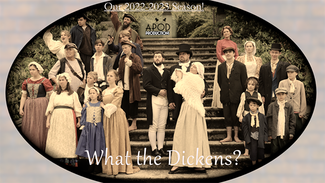

not public: Oliver rehersal playlists
This page uses javascript for best experience. If scripts are blocked try this
alternative
Choose a playlist
Mate
Funeral
Food Glorious
Pickpockets!
Oom Pah Pah
Consider Yourself
Fine Life
I'd Do Anything
All Videos

Previous
Play
Next